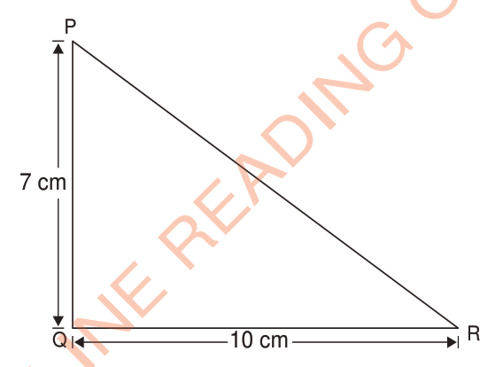

In Activity 2 you have learnt that the area of a triangle is obtained by counting small squares. That is the area of a triangle is obtained by taking half of the area of the square or rectangle.
Example 1
Find the area of the triangle PQR.

Solution
Base = 10 cm
Height = 7 cm
Therefore, the area of a triangle PQR is 35 cm.